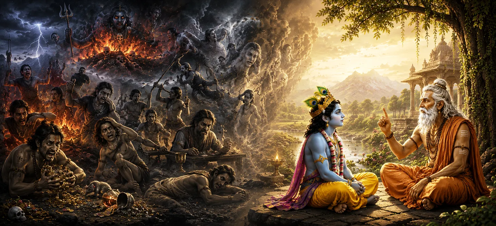

The Great Sins and Their Consequences
Building upon the grand exposition of Shiva's power in Chapter 4, the fifth chapter of Uma Samhita shifts focus toward moral governance and the law of cause and effect. It explores the severe transgressions known as Mahapatakas (great sins) and details the precise karmic consequences they bring upon an individual's soul.
The text emphasizes that the universe operates under an unshakeable system of spiritual justice supervised by Mahadeva. Actions performed out of malice, ego, and ignorance create deep subtle impressions that inevitably bear fruit as suffering in this life or future existences.
However, Chapter 5 is not merely a warning; it also serves as a compassionate guide. It underscores that sincere repentance, active restitution, and total refuge in Lord Shiva can break the cycle of guilt and purify even deeply burdened souls.
Chapter 5 Highlights
Cosmic Order
Explains how Shiva's divine authority maintains morality across all worlds.
The Mahapatakas
Identifies major moral transgressions that severely damage spiritual life.
Karmic Consequences
Outlines the exact suffering and re-birth conditions generated by evil acts.
Power of Repentance
Demonstrates how honest self-reflection and Prayaschitta dissolve bad karma.
Role of Refuge
Highlights Shiva's compassionate willingness to uplift true penitents.
Moral Awakening
Encourages seekers to lead self-disciplined, compassionate, and pure lives.
Core Topics in This Chapter
- 01 The Unyielding Law of Cause and Effect →
- 02 Defining the Major Sins (Mahapatakas) →
- 03 The Internal Mindset Leading to Moral Fall →
- 04 Karmic Consequences in Astral and Earthly Realms →
- 05 How Uncleansed Sin Affects Future Births →
- 06 The Doctrine of Atonement (Prayaschitta) →
- 07 The Cleansing Energy of Shiva's Holy Name →
- 08 Divine Retribution as Restorative Education →
- 09 Practicing Vigilance in Daily Conduct →
- 10 Preparing for Detailed Classification of Sins →
The Unyielding Law of Cause and Effect
Chapter 5 begins by establishing that no thought, word, or deed is ever lost in the cosmic order. Lord Shiva oversees an impartial law of Karma that accurately reflects every individual's intentions and actions back upon themselves.
Just as a seed planted in fertile soil naturally grows into a tree of its own kind, virtuous deeds yield joy, while harmful acts mature into suffering. There are no accidental punishments in Shiva's creation.
Recognizing this cosmic law frees a seeker from blaming external circumstances and empowers them to take full responsibility for their spiritual destiny.
Defining the Major Sins (Mahapatakas)
The scripture categorizes the grave moral failures termed Mahapatakas. These include acts that severely destroy social harmony, harm innocent beings, betray sacred trust, or slander holy spiritual wisdom.
These acts are classified as 'great' because they severely pollute the subtle mind, create heavy dark karmic bonds, and obscure the inner light of the soul far more than minor mistakes.
By explicitly outlining these transgressions, the Purana serves to protect individuals from stepping onto paths that lead to long-term spiritual degradation.
The Internal Mindset Leading to Moral Fall
The text explains that no one commits a great sin suddenly; it is the culmination of unchecked small vices. Pride, greed, unchecked anger, and envy gradually blind the intellect (Buddhi).
When the intellect is corrupted, a person loses the capacity to distinguish right from wrong, eventually committing acts that bring ruin upon themselves and others.
Hence, spiritual wisdom demands watching over one's subtle thoughts and nipping harmful desires in the bud before they transform into destructive actions.
Karmic Consequences in Astral and Earthly Realms
Chapter 5 details how the energy of unrefined sins follows the soul after death into astral planes, leading to painful experiences tailored to rebalance the wrong done.
These lower realms are not permanent places of condemnation, but intense karmic holding zones where the soul experiences the precise pain it inflicted upon others.
In the physical world, unpurified karma manifests as chronic anxiety, broken relationships, spiritual restlessness, and loss of inner peace.
How Uncleansed Sin Affects Future Births
The chapter outlines the doctrine of reincarnation shaped by unresolved karma. Souls carrying heavy unatoned sins take birth in conditions where their capacities are limited, reflecting their past misuse of power.
Conversely, those who recognize their mistakes and work toward purity gradually earn lighter conditions conducive to rapid spiritual growth.
This teaching underscores that present character and tendencies are self-created, and can be altered through deliberate righteous effort today.
The Doctrine of Atonement (Prayaschitta)
A pivotal message of Chapter 5 is that karma is not an absolute, cruel trap. The scriptures introduce Prayaschitta—the process of voluntary atonement, honest confession, and righteous living to burn away sinful impressions.
True atonement requires heartfelt sorrow for past wrongdoings, a vow never to repeat the action, and active service to perform acts of charity and kindness.
When a person sincerely repents, the rigid structure of negative karma softens, allowing divine grace to enter and restore the soul.
The Cleansing Energy of Shiva's Holy Name
The text glorifies the supreme purificatory power of Lord Shiva's holy names and mantras. Constant remembrance of Mahadeva acts like a blazing fire that incinerates accumulated karmic debts.
Chanting the Panchakshara Mantra ('Om Namah Shivaya') with genuine devotion shifts the mental frequency away from low, selfish patterns to elevated, divine awareness.
No matter how heavy a person's past may be, taking sincere refuge in Shiva's holy name initiates immediate spiritual healing and inner purification.
Divine Retribution as Restorative Education
Chapter 5 offers a profound philosophical perspective: divine judgment is not driven by vengeance, but by love and cosmic restoration. Lord Shiva acts as the supreme physician of the universe.
The unpleasant consequences of wrong actions serve as medicine to purge the soul of ignorance and selfishness. Just as a doctor performs surgery to save a life, karmic suffering removes spiritual impurities.
Understanding Shiva's compassionate discipline transforms fear into gratitude, encouraging the seeker to align willingly with righteous living.
Practicing Vigilance in Daily Conduct
The chapter advises devotees to cultivate steady awareness over daily choices. Avoid harming others through harsh words, deceitful actions, or selfish motives.
Engage regularly in acts of selfless service (Seva), charity (Dana), truthfulness (Satya), and compassion (Daya). These positive habits build a shield of spiritual merit around the seeker.
Living attentively converts daily life into a continuous act of worship, ensuring steady progress toward liberation.
Preparing for Detailed Classification of Sins
Chapter 5 finishes its exploration of major sins by setting the foundation for broader moral analysis. Having highlighted the severity of Mahapatakas and the law of karmic justice, the text prepares the reader for a deeper look at all human mistakes.
It emphasizes that to completely purify one's life, a seeker must understand not only major violations but also subtle transgressions of body, mind, and speech.
This sets up a seamless transition to Chapter 6, which categorizes the different varieties and nuances of sinful acts in comprehensive detail.
Key Teachings of Chapter 5
Impartial Justice
Karmic laws apply equally to all beings under Lord Shiva's divine authority.
Beware of Small Vices
Unchecked minor negative habits grow into destructive major transgressions.
Sincere Atonement
Honest repentance and active restitution soften past karmic burdens.
Healing Through Devotion
Remembrance of Shiva purifies the subtle body and burns away negativity.
Redemptive Discipline
Karmic suffering is designed to heal and elevate, not merely punish.
Responsibility for Destiny
We shape our spiritual future through current conscious choices.
Spiritual Reflection
Chapter 5 offers a profound reminder that our choices carry weight, and the universe is governed by profound moral intelligence. While the discussion on severe sins highlights the serious reality of karma, the ultimate tone of the Purana is filled with hope. Lord Shiva does not discard those who slip; instead, he opens the doorway of repentance and divine grace. By taking responsibility for our past, practicing genuine humility, and surrendering our lives to Mahadeva, we transform our character and step out of darkness into the radiant light of righteousness.
Living the Message of Chapter 5
Practicing Chapter 5 involves taking intentional responsibility for our moral lives. Perform daily self-examination to identify and correct ego-driven thoughts or actions before they turn into hurtful behavior.
If you have hurt someone, apologize sincerely and make amends immediately. Practice chanting 'Om Namah Shivaya' during quiet moments to clear mental pollution and strengthen your resolve to walk the spiritual path.
Replacing negative choices with positive habits ensures that your karmic garden grows flowers of peace rather than thorns of distress.
Key Spiritual Concepts
Grave moral violations that severely distort spiritual progress and karma.
The infallible universal law of action and reaction governed by Shiva.
Voluntary spiritual atonement, penance, and restitution to cleanse sins.
Purification of the intellect to discern moral truth clearly.
Subtle mental impressions left behind by thoughts and actions.
The divine grace that dissolves guilt and restores purified souls.
Chapter Summary
Uma Samhita Chapter 5 details the working of cosmic justice, defining the severe transgressions known as Mahapatakas and the severe consequences they carry. It reveals that wrong actions spring from unchecked internal vices like pride, greed, and anger, which cloud human intellect. Unpurified sins produce suffering in both astral realms and physical re-births. However, the Purana stresses that Shiva's justice is designed to correct rather than destroy. Through genuine repentance (Prayaschitta), restitution, and sincere remembrance of Shiva's holy name, even severe karmic burdens are dissolved, allowing souls to recover their inherent divine purity. The chapter establishes a firm foundation for Chapter 6's broader study of different kinds of sins.
Frequently Asked Questions
① What is the primary topic of Uma Samhita Chapter 5?
The primary topic covers the core law of karma, major spiritual transgressions known as Mahapatakas, the inevitable suffering they bring, and how repentance purifies the soul.
② What are the Mahapatakas described in scriptures?
Mahapatakas refer to grave moral violations, such as severe betrayal, harming enlightened beings, theft of sacred trust, and extreme moral corruption that disturb cosmic order.
③ Is karmic retribution meant as punishment or correction?
Karmic retribution in Shiva Purana is restorative rather than purely punitive. It acts as an educational process to awaken soul to truth and righteousness.
④ Can major sins be cleansed according to Chapter 5?
Yes, through deep remorse, genuine repentance (Prayaschitta), devotion to Lord Shiva, and active dedication to righteous living, even severe karmic burdens are lightened.
⑤ How does understanding karmic laws benefit daily life?
It inspires mindful conduct, personal responsibility, empathy toward others, and a commitment to avoid harmful actions that create future suffering.
⑥ How does Chapter 5 connect to Chapter 6?
Chapter 5 establishes the framework of major sins; Chapter 6 broadens this study by classifying the different categories and varieties of sins in detail.
“No darkness of the past is too deep for the light of sincere repentance and Shiva's boundless mercy to dissolve.”
Continue Through Uma Samhita
Chapter 5 details the great sins, karmic consequences, and the path of divine repentance. With these foundational principles of cosmic justice in mind, continue into Chapter 6 to examine the different kinds and variations of sins.